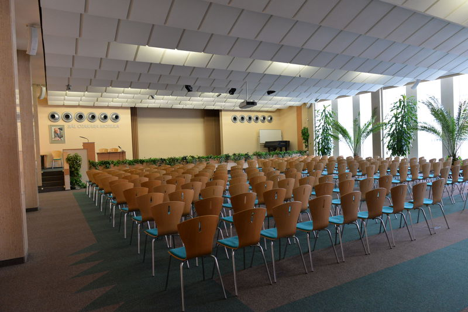
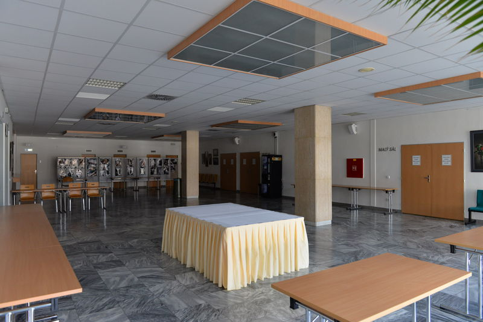
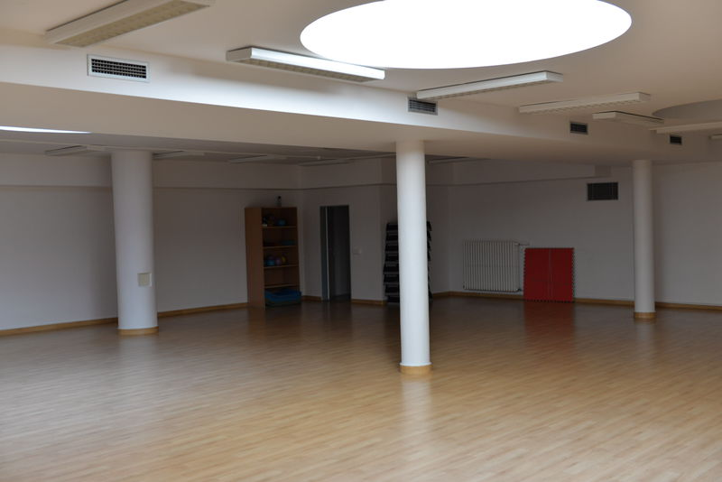

Pronájem prostor
Velký sál
Obecné informace o sálu
- Sál je vhodný pro pořádání seminářů, konferencí, koncertů, hudebních programů (solidní akustika), apod.
- Prostor je vybaven stoly + židlemi, pódiem. Max. kapacita při školní úpravě je 144 míst, při koncertní úpravě 216 míst.
- Rozměr sálu: šířka místnosti: 16 m, délka místnosti: 19 m
- Standardní vybavení AV technikou: dataprojektor vč. promítacího plátna, notebook, ozvučení az 7 mikrofony, WiFi, flipchart, klavír
- Sál je klimatizován, možnost zatemnění sálu
- V sále je zákaz konzumace jídla a nápojů
- Pro podání pohoštění či neformální setkání je možno využít předsálí
Dispoziční možnosti





Malý sál
Obecné informace o sálu
Sál je vhodný pro pořádání seminářů, konferencí, apod.
- Prostor je vybaven stoly + židlemi. Max. kapacita při školní úpravě je 64 míst, při koncertní úpravě 70 míst.
- Rozměr sálu: šířka místnosti: 8 m, délka místnosti: 17 m
- Standardní vybavení AV technikou: dataprojektor vč. promítacího plátna, notebook, ozvučení – 2 mikrofony, WiFi, flipchart
- Sál je klimatizován
- V sále je zákaz konzumace jídla a nápojů
- Pro podání pohoštění či neformální setkání je možno využít předsálí


Předsálí
Obecné informace o předsálí
- K pronájmu sálů se automaticky připočítává pronájem předsálí
- Předsálí je vhodné využít zejména pro prezentace a podání pohoštění
- Rozměr předsálí: šířka místnosti: 10 m, délka místnosti: 21 m
- Uzamykatelná šatna bez obsluhy, toalety, stoly + židle na případné občerstvení účastníků akce
- Z provozně-technických důvodů je možné využít cateringových služeb pouze u našeho provozovatele kantýny. Jde o paní Hanu Kobelkovou, tel: 604 906 046, e-mail: Hana.Kobelkova@email.cz


Tiskové středisko
Obecné informace o tiskovém středisku
- Tiskové středisko je vhodné pro pořádání seminářů, kulatých stolů
- Prostor je vybaven stoly + židlemi, max. kapacita do 25 osob
- Rozměr tiskového střediska:
- Standardní vybavení AV technikou: dataprojektor vč. promítacího plátna, notebook, ozvučení, WiFi, flipchart
- Prostor je klimatizován
- Pro podání drobného pohoštění je možno využít prostoru před TS


Víceúčelová místnost
Obecné informace o víceúčelové místnosti
- Víceúčelová místnost je vhodná pro sportovní aktivity (aerobic, jóga, pilates), pro taneční tréninky
- Místnost se nachází v přízemí budovy
- Max. kapacita do 20 osob
- Rozměry místnosti: šířka místnosti: 14 m, délka místnosti: 14 m
- Zrdcadlová stěna
- K dispozici jsou karimatky, činky, overball, aerobic step bedýnky



Komerční ceník
Nekomerční ceník
Kontaktní osoba
Markéta Svobodová
sekretariát vedoucího kanceláře
Tel: 542 542 555
E-mail: marketa.svobodova@ochrance.cz